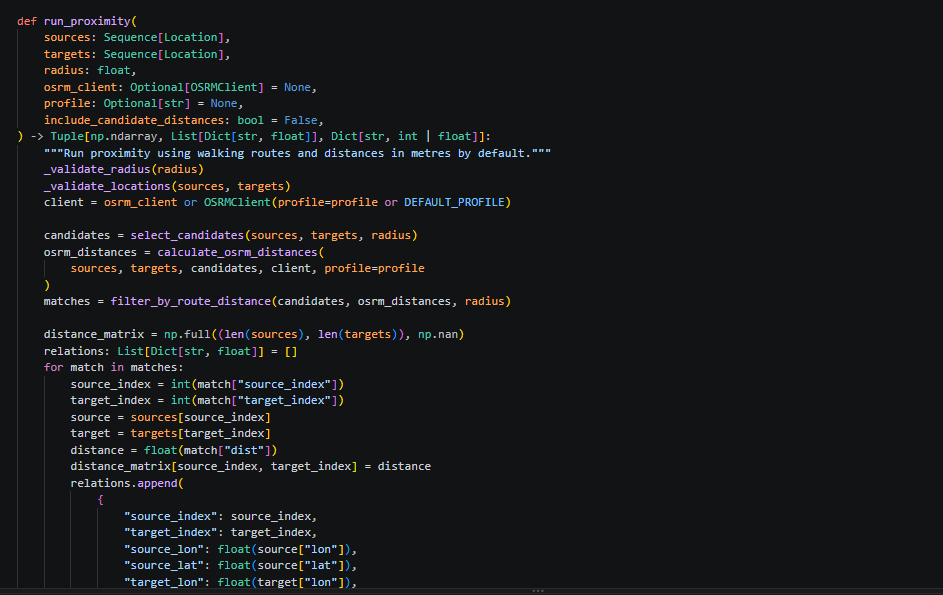

Python Screening, OSRM Routing
A small implementation surface: validate inputs, prune safely, route candidates and aggregate.

The implementation preserves the mathematical decision rule while making routed-distance evaluation practical.
Python handles validation, lower-bound screening and result assembly. OSRM computes shortest paths on the selected transport network. This separation keeps the proximity definition independent of the application.
Python calculation layer
The proximity module validates coordinates, non-negative weights and the radius. It then computes the Haversine lower bound, selects candidate pairs and filters routed distances.
NumPy stores the source-by-target matrix. Entries that are not accepted use numpy.nan, keeping
the matrix shape explicit while separating matches from non-matches.
OSRM as the directed distance oracle
OSRMClient resolves a local endpoint for the selected foot, car or
bicycle profile. It calls OSRM's table service for source-to-candidate distances.
Requests are chunked to respect coordinate limits and assembled into matrix blocks. The Folium visualisation uses OSRM's route service separately to retrieve GeoJSON route geometries.
The radius can be expressed in metres or seconds; in duration mode, an assumed average profile speed supports candidate screening while OSRM compares the actual travel durations.
Reusable entry point
from libraries.algoritm.algoritm import run_proximity
distance_matrix, relations, summary = run_proximity(
sources=sources,
targets=targets,
radius=100,
profile="foot",
)The matrix provides distance evidence, the relations explain accepted pairs, and the summary provides decision-ready counts and weights.